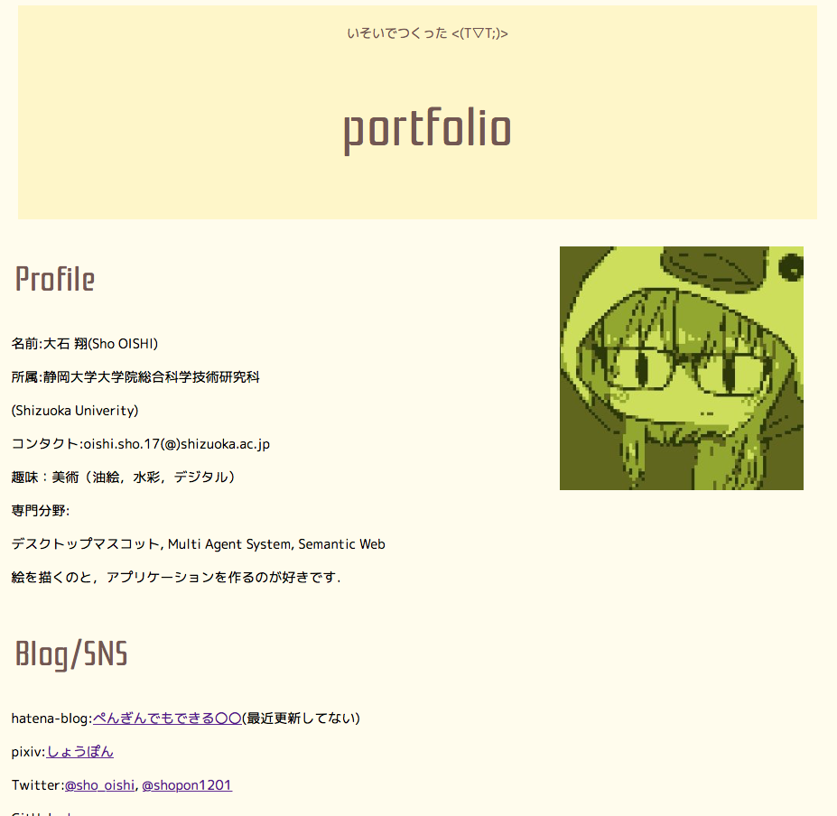

いそいでつくった <(T▽T;)>
portfolio

Profile
名前:大石 翔(Sho OISHI)
所属:静岡大学大学院総合科学技術研究科(Shizuoka Univerity)
コンタクト:oishi.sho.17(@)shizuoka.ac.jp
趣味：美術（油絵，水彩，デジタル）
専門分野:デスクトップマスコット, Multi Agent System, Automated Negotiation, Reinforcement Learning, Semantic Web
絵を描くのと，アプリケーションを作るのが好きです．
Works
個人での活動や大学及び大学院での講義における制作物について．クリックして詳細ページに！

ポートフォリオサイトの作成
ポートフォリオサイトの作成
ポートフォリオサイトの作成
ポートフォリオサイトの作成
ポートフォリオサイトの作成
ポートフォリオサイトの作成
Achievements
査読付き国際会議及びWorkshop
- S. Oishi, and N. Fukuta,``MstdnDeck: an Agent-based Protection of Cyber-bullying on Distributedly Managed Linked Microbloggings'',Proc. of 2nd International Workshop on Platforms and Applications for Social problem Solving and Collective Reasoning(PASSCR2017),(to appear).
- S. Oishi, and N. Fukuta,``Toward a Negotiation-based Cooperation Mechanism for User Assistance Agents and Humans'',Proc. the 10th International Workshop on Agent-based Complex Automated Negotiations (ACAN2017),2017.
- S. Oishi, and N. Fukuta,``Toward a User Incentive Mechanism to Accomplish Unworkable Tasks for Agents'',Proc. of 1st IEEE International Conference on Agents(ICA2016),pp.125--126,2016.(poster)
- S. Oishi, and N. Fukuta,``Toward a Flexible Ability Selection Mechanism for Personal Assistant Agent using Ontology Reasoning'',Proc. of 1st International Workshop on Platforms and Applications for Social problem Solving and Collective Reasoning(PASSCR2016),pp.92--95,2016.
- S. Oishi, and N. Fukuta,``A Cooperative Task Execution Mechanism for Personal Assistant Agents using Ability Ontology'',Proc. of IEEE/WIC/ACM International Conference on Web Intelligence(WI2016),pp.664--667,2016.
2017
2016
国内全国大会及び総合大会
- 大石翔，福田直樹: 個人支援エージェントにおけるPreference Elicitation最適化に基づく競合調整機構の試作，2017年度人工知能学会全国大会，3N1-5in1（2017）
- 大石翔，福田直樹: 個人支援エージェントの能力オントロジーに基づく協調的タスク遂行機構の試作，2017年度人工知能学会全国大会，1J2-3in1（2016）
- 大石翔，福田直樹: 個人支援エージェントの強化学習に基づく動的処理負荷調整機構の試作，2016 年度電子情報通信学会総合大会，D-8-8（2016）
2017
2016
Blog/SNS